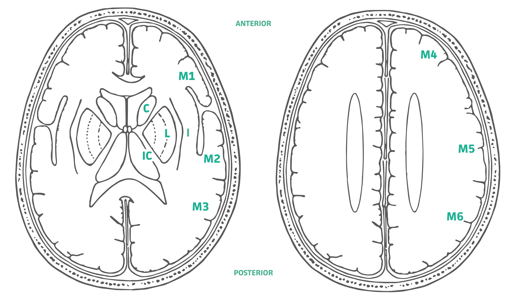

從 10 分起算，於單側 MCA 供血區的 10 個區域中，每有一區出現早期缺血變化（灰白質界線消失、皮質腫脹、低密度）即扣 1 分。直接點選下方腦切面圖中受影響的區域（圈圈）。

左：神經節層（基底節 / 視丘層面） · 右：神經節上層（側腦室體部上方） — 點擊圈圈切換受影響狀態
深部結構：
C 尾狀核 · L 豆狀核 · IC 內囊 · I 腦島帶
皮質（神經節層）： M1 前 MCA · M2 腦島外側 MCA · M3 後 MCA
皮質（上層）： M4 前 · M5 外側 · M6 後
皮質（神經節層）： M1 前 MCA · M2 腦島外側 MCA · M3 後 MCA
皮質（上層）： M4 前 · M5 外側 · M6 後
—
尚未評分。
→ 前往 AIS 治療決策
整合 ASPECTS、時間窗、LVO 決定 IVT / EVT